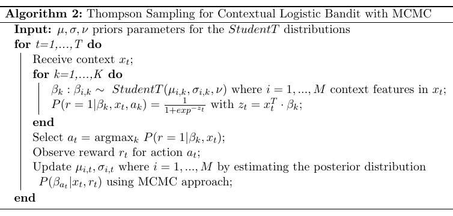

Contextual Multi-Armed Bandit
For the contextual multi-armed bandit (sMAB) when user information is available (context), we implemented a generalisation of Thompson sampling algorithm (Agrawal and Goyal, 2014) based on PyMC3.
The following notebook contains an example of usage of the class Cmab, which implements the algorithm above.
[1]:
import numpy as np
import pandas as pd
from pybandits.core.cmab import Cmab
First, we need to define the input context matrix \(X\) of size (\(n\_samples, n\_features\)) and the list of possible actions \(a_i \in A\) .
[2]:
# context
n_samples = 1000
n_features = 5
X = 2 * np.random.random_sample((n_samples, n_features)) - 1 # random float in the interval (-1, 1)
print('X: context matrix of shape (n_samples, n_features)')
print(X[:10])
X: context matrix of shape (n_samples, n_features)
[[-0.53211475 -0.40592956 0.05892565 -0.88067628 -0.84061481]
[-0.95680954 -0.00540581 0.09148556 -0.82021004 -0.63425381]
[-0.87792928 -0.51881823 -0.51767022 -0.05385187 -0.64499044]
[-0.10569516 0.30847784 -0.353929 -0.94831998 -0.52175713]
[-0.05088401 0.17155683 -0.4322128 -0.07509104 -0.78919832]
[-0.88604157 0.55037109 0.42634479 -0.87179776 -0.69767766]
[-0.0022063 0.99304089 0.76398198 -0.87343131 -0.12363411]
[ 0.36371019 0.6660538 0.17177652 -0.08891719 -0.91070485]
[-0.1056742 -0.72879406 -0.69367421 -0.8684397 0.70903817]
[-0.15422305 0.31069811 -0.47487951 0.00853137 0.23793364]]
[3]:
# define actions
actions_ids= ['action A', 'action B', 'action C']
We can now init the bandit given the number of features and the list of actions \(a_i\).
[4]:
# init contextual Multi-Armed Bandit model
cmab = Cmab(n_features=n_features, actions_ids=actions_ids)
The predict function below returns the action selected by the bandit at time \(t\): \(a_t = argmax_k P(r=1|\beta_k, x_t)\). The bandit selects one action per each sample of the contect matrix \(X\).
[5]:
# predict action
pred_actions, _ = cmab.predict(X)
print('Recommended action: {}'.format(pred_actions[:10]))
Recommended action: ['action C' 'action C' 'action B' 'action B' 'action C' 'action C'
'action B' 'action C' 'action B' 'action C']
Now, we observe the rewards from the environment. In this example rewards are randomly simulated.
[6]:
# simulate reward from environment
simulated_rewards = np.random.randint(2, size=n_samples)
print('Simulated rewards: {}'.format(simulated_rewards[:10]))
Simulated rewards: [1 0 0 0 0 0 0 0 1 1]
Finally we update the model providing per each action sample: (i) its context \(x_t\) (ii) the action \(a_t\) selected by the bandit, (iii) the correspoding reward \(r_t\).
[7]:
# update model
cmab.update(X, actions=pred_actions, rewards=simulated_rewards)
Auto-assigning NUTS sampler...
Initializing NUTS using adapt_diag...
Sequential sampling (2 chains in 1 job)
NUTS: [beta4, beta3, beta2, beta1, beta0, alpha]
Sampling 2 chains for 500 tune and 1_000 draw iterations (1_000 + 2_000 draws total) took 5 seconds.
Auto-assigning NUTS sampler...
Initializing NUTS using adapt_diag...
Sequential sampling (2 chains in 1 job)
NUTS: [beta4, beta3, beta2, beta1, beta0, alpha]
Sampling 2 chains for 500 tune and 1_000 draw iterations (1_000 + 2_000 draws total) took 3 seconds.
Auto-assigning NUTS sampler...
Initializing NUTS using adapt_diag...
Sequential sampling (2 chains in 1 job)
NUTS: [beta4, beta3, beta2, beta1, beta0, alpha]
Sampling 2 chains for 500 tune and 1_000 draw iterations (1_000 + 2_000 draws total) took 3 seconds.